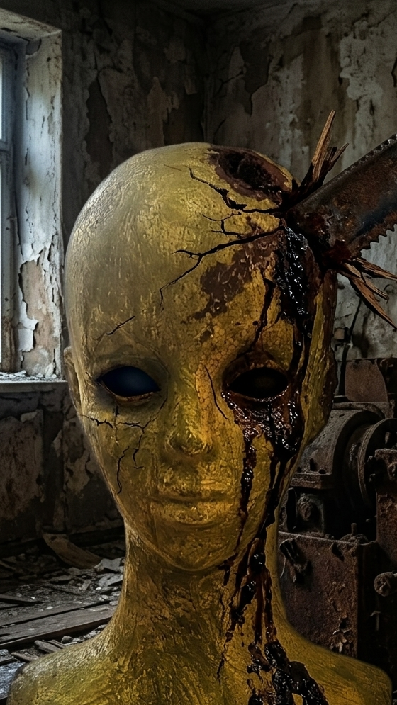

Sculpture II: "TAKEHANA"

This sculpture, discovered in an abandoned industrial facility in 1994, presents a chilling intersection of organic mimicry and violent structural damage. The head is coated in a weathered, golden-metallic veneer, deeply fractured as if subjected to intense pressure.
The most striking feature is the heavy, rusted iron blade embedded directly into the cranial sector. The positioning suggests a deliberate, ritualistic act or a symbolic representation of trauma. Witnesses reported hearing localized auditory anomalies when standing within close proximity to the object.
[ Scroll down for continuous analysis reports ]